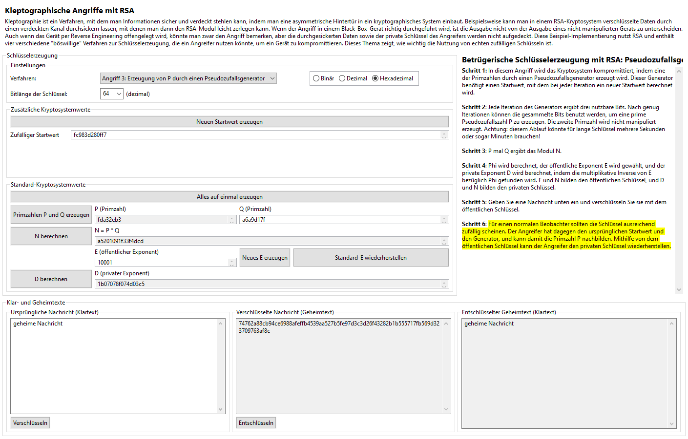

Ähnlich wie der Angriff mit einer Pseudozufallsfunktion, aber etwas sicherer, ist der Einsatz eines Pseudozufallsgenerators zur Erzeugung der Primzahl P. Die Autoren des Buches [YY04] schlagen in den Absätzen 11.2.3 und 3.5.2 die Anwendung des Blum-Blum-Shub pseudozufälligen Zahlengenerators vor. Dieser Generator bekommt einen anfänglichen Startwert und nutzt ein kompliziertes Verfahren, um gleichzeitig die Primzahl P und einen neuen Startwert, der den alten überschreibt, zu erzeugen. Der Angreifer muss nur eine Kopie des anfänglichen Startwerts und des Generators besitzen, um die gleiche Ausgabe wie das kryptografische Gerät zu produzieren.
Die Sicherheit dieses Verfahren (aus der Perspektive des Angreifers) ist nur geringfügig besser als die der Pseudozufallsfunktion. Da der Startwert in jedem Schritt des Ablaufs überschrieben wird, ist es nicht mehr möglich, dass man per Reverse Engineering alle vorherigen erzeugten Werte nachbilden könnte. Er könnte jedoch immer noch den aktuellen Startwert im Datenspeicher finden, den Generatoralgorithmus erforschen, und alle zukünftigen Ausgabe nachbilden. Für einen normalen Beobachter würde das Gerät noch sicher scheinen, aber für den Reverse-Engineer oder jeden anderen leistungsfähigen Beobachter wäre das Gerät von Moment der Untersuchung an völlig kompromittiert.
Wie oben erwähnt basiert diese Implementierung des pseudozufälligen Generators auf dem Blum-Blum-Shub-Algorithmus. Das Gerät enthält eine 48-Bit Zahl, die auf einen pseudozufälligen, dem Angreifer bekannten Wert initialisiert wird. Dieser Wert wird als Startwert x in der Funktion (x ^ (2 ^ i) mod n) mod 2 für i = 0 bis 50 benutzt, wobei in jeder Iteration das höchstwertige Byte gespeichert wird, um den nächsten Startwert zu bilden. Die N in dieser Funktion ist das Produkt von zwei 256-Bit pseudozufällige Primzahlen, die von dem aktuellen Startwert hergeleitet sind, und die kongruent 3 mod 4 sein müssen. Nach Erzeugung dieser neuen, 51-Bit pseudozufälligen Zahl werden die ersten drei Bits in einem besonderen Bitstrom und die übrigen 48 Bits als neuer Startwert gespeichert. Nachdem dieser Vorgang sechszehnmal gelaufen ist, sind 48 Bits in dem Bitstrom gespeichert worden, der danach als Startwert zur Erzeugung der Primzahl P benutzt wird. Die zweite Primzahl Q und alle anderen kryptografischen Werte werden normal erzeugt. (Man darf den Wert von Q wählen oder das Gerät den Wert wählen lassen.)
Die Benutzeroberfläche sieht ähnlich aus wie die der nicht manipulierten Schlüsselerzeugung oder die bei der Pseudozufallsfunktion, mit Ausnahme von dem Button "Neuen Startwert erzeugen" und dem entsprechenden Feld für den zufälligen Startwert. Bevor die Primzahlen erzeugt werden können, muss dieser Startwert initialisiert werden, aber danach wird während der Simulation des Arbeitsablaufs eines bestimmten Geräts keine weitere Benutzereingabe benötigt. Neuerzeugung des Startwerts simuliert im Endeffekt den Arbeitsablauf eines anderen infizierten Geräts.

Es gibt keine extra Simulation der Perspektive des Angreifers für diesen Angriff, denn die Reihenfolge wäre fast genau dieselbe, wie die, was das Gerät selbst gemacht hat: Der Angreifer würde den gleichen Startwert als Eingabe zu der gleichen Generatorfunktion nutzen, um den gleichen Startwert zu bilden, um die gleiche Primzahl P zu erzeugen. Weil das Modulus N ein Teil des öffentlichen Schlüssels ist, kann die zweite Primzahl Q mittels Division von N durch P gefunden werden, und der private Exponent D kann mithilfe von dem öffentlichen Exponent E berechnet werden.
Klicken Sie hier, um zurück zum Kleptographie-Index zu gehen, oder hier, um zur nächsten Seite (SETUP-Angriff) zu gehen.
[YY04] A. Young, M. Yung, Malicious Cryptography: Exposing Cryptovirology, John Wiley & Sons, 2004.